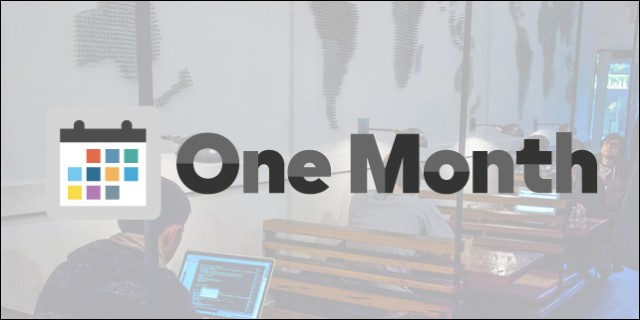

One Month Rails

January
I will start the One Month Rails course taught by Mattan Griffel. I plan to be done before the 30-days and be at the n00b level of Raisl, which will be a huge step forward since my current knowledge of anything Ruby is ZERO.
One Month HTML
February
I will continue my coding education using One Month by learing HTML and CSS. Some HTML will be a refresher for me - I taught myself basic HTML several years ago when I developed a local intraoffice webpage linking our shared files and folders together so everyone could simply point and click to get to the shared goodies...this was pre-SharePoint for us. Anyway, I will work on this and plan to complete it before the 30 days ends.